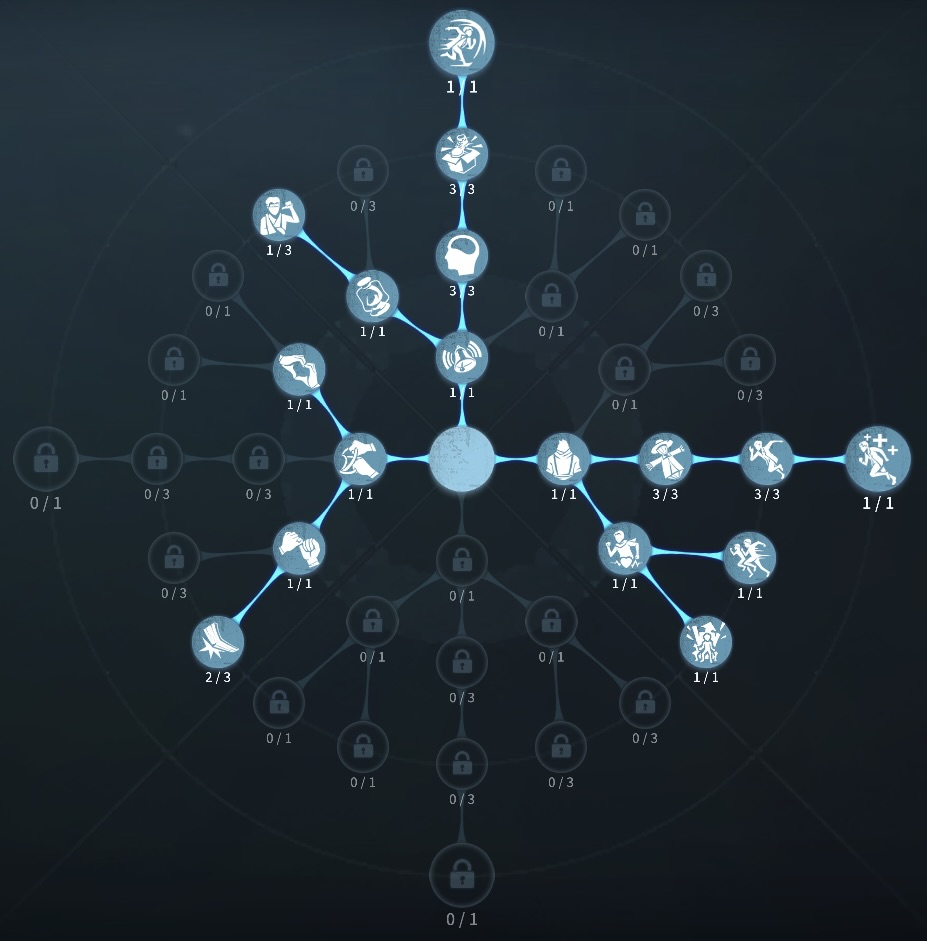
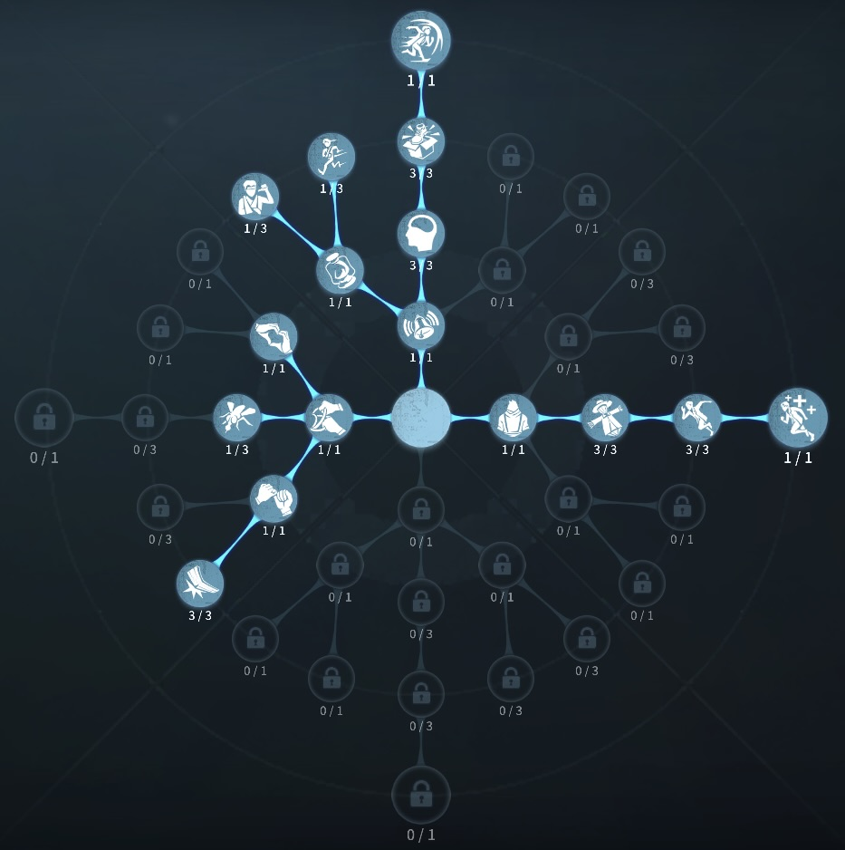

踊り子の評価
オルゴールにてハンターを狂わす
外在特質と特徴
特質1:2重奏
・踊り子はオルゴールを3つ持っており、それぞれ赤のオルゴールか青のオルゴールにすることができる。オルゴールの6mの範囲内では以下の効果が発動する。オルゴールは設置してから300秒後に自動的に破壊される。青のオルゴール
1/2/3層につきハンターの移動速度を12%/21%/30%アクション速度を25%/30%/35%操作速度を6%/9%/12%それぞれ低下させる。
赤のオルゴール
1/2/3層につきサバイバーの移動速度を15%/25%/35%アクション速度を25%/30%/35%操作速度を6%/9%/12%それぞれ上昇させる。
・オルゴールを設置するとき長押しすることでオルゴールの範囲を最大3m広げることができる。
・オルゴールはその範囲を出ても2秒間効果が持続する。
・グリッサード
踊り子はオルゴールの範囲内で右回りで8m高速で移動することができ、移動後10秒以内にまだ範囲内であれば同様に左回りで高速移動することができる。
特質2:曲芸
・高いところから落下すると3秒間移動速度が30％上昇する。特徴
赤オルゴールと青オルゴールの理解度が必要となる。グリッサードを使いこなすとチェイス時間が大幅に上がる。
落下加速を得られるのもなにげに強い！
補佐能力も非常に高いので、補佐の強いオルゴールポジションも覚えておく必要がある。
基本的な立ち回り方
1. 追われた時
板感にオルゴールを設置することでオルゴール壊し中の確定板当てができたり、板を先倒しすることで、板破壊しないとオルゴールが壊れない無限オルゴールを使ってチェイスをのばす。
使いどころにもよるが青オルゴールがおすすめ！
無限オルゴールはハンターが板を割っている最中に距離をとるのが良い、その時にグリッサードで距離をとれれば、なお良い。
2. 追われない時
解読に専念しよう!
赤オルゴールで解読が少し早くはなるものの、
オルゴール設置時間で解読時間が同じくらい、それ以下になるため
おかないほうが良い。
タゲチェンや巻き込みなどを考慮して近くの板間に青オルゴールは
強い。
青オルゴールの補佐も強いので、補佐に適したポジションを
各マップで覚えておくと強力
おすすめの内在人格
フライホイール型人格
この内在人格は、怪力に振ることでオルゴールを板間で壊したハンターに板当てを狙い癒合と観客効果を積んだ人格

フライホイール型人格
この内在人格は、怪力に最大に振る防衛反応と癒合を採用してチェイスに特化させた人格


みんなのコメント